Hướng dẫn sử dụng cho Giám Đốc
Dành cho hai vai trò giám đốc trong mô hình 3 trụ cột: Giám Đốc Kinh Doanh phụ trách tuyển sinh/doanh thu/CSKH, Giám Đốc Đào Tạo phụ trách học vụ/lớp/giáo viên.
Giám Đốc Kinh Doanh
giam_doc_kinh_doanh · CRM, CSKH, đổi quà, xem tài chính, xác nhận/duyệt KPI.
Giám Đốc Đào Tạo
giam_doc_dao_tao · học vụ, khóa học, lớp, lịch, điểm danh, chấm bài, học bạ, level-up.
1. Đăng nhập
Cả hai giám đốc đăng nhập bằng tài khoản CMC EDU qua tài khoản Microsoft của công ty.
- Mở ứng dụng nhân viên trên trình duyệt.
- Bấm Đăng nhập bằng tài khoản CMC EDU.
- Dùng email công ty:
nhungdt@cmcvn.edu.vnhoặchongltn@cmcvn.edu.vn. - Sau khi Microsoft xác thực, hệ thống đưa vào đúng giao diện theo vai trò.
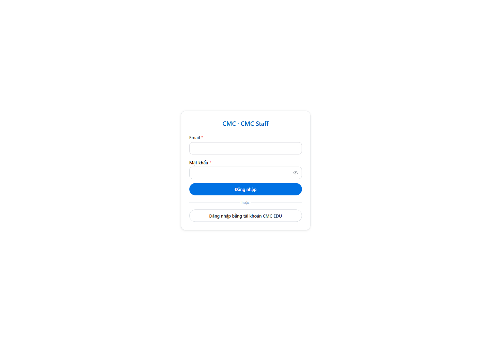
2. Tổng quan giao diện
Ứng dụng nhân viên dùng một shell chung: thanh trên cùng, chuông thông báo, avatar, nút đăng xuất, menu trái và vùng nội dung chính. Menu được lọc theo vai trò, còn nút hành động bên trong cũng đi theo quyền.
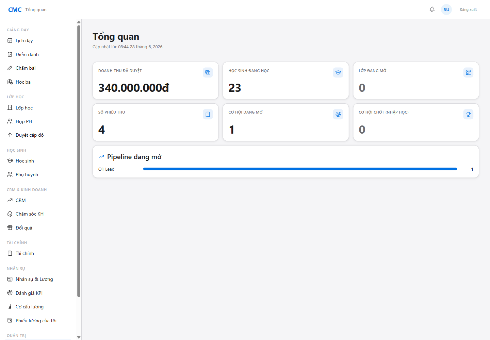
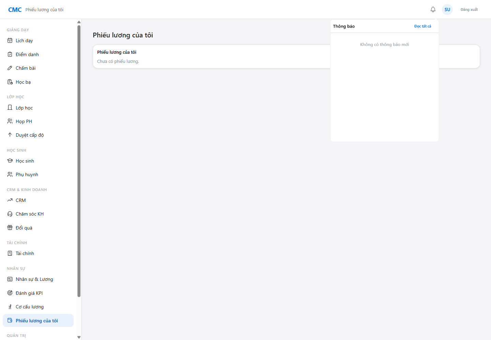
3. Lần đầu vào hệ thống: cần làm gì trước?
Giám đốc không nên bắt đầu bằng việc bấm thử tất cả menu. Hãy đi theo thứ tự dưới đây để hệ thống có đủ dữ liệu vận hành cho nhóm.
GĐ Kinh Doanh: 30 phút đầu
- Mở Tổng quan để kiểm tra đúng cơ sở và đúng vai trò.
- Mở Cơ sở & Người dùng, tạo sale/CSKH/CTV marketing cần dùng ngay.
- Mở CRM, kiểm tra các bước O1-O5 O1-O5 và thống nhất cách sale cập nhật từng bước.
- Mở Chăm sóc khách hàng, kiểm tra người nhận ca after-sale.
- Mở Tài chính ở chế độ xem để nắm doanh thu/phiếu thu, không ghi nhận giao dịch.
- Mở Đánh giá KPI, xác định kỳ nào đang cần xác nhận hoặc duyệt.
GĐ Đào Tạo: 30 phút đầu
- Mở Tổng quan để kiểm tra đúng cơ sở và đúng vai trò.
- Mở Cơ sở & Người dùng, tạo giáo viên/trưởng bộ môn cần phân lớp.
- Mở Khóa học, kiểm tra chương trình/khóa học đã đủ để tạo lớp.
- Mở Lớp học, tạo lớp hoặc kiểm tra lớp đang planned/running.
- Mở Lịch dạy, kiểm tra giáo viên, phòng học và lịch sinh buổi.
- Mở Học bạ/Duyệt cấp độ, kiểm tra kỳ học và đề xuất đang chờ.
Checklist ngày đầu
| Mục kiểm tra | Vì sao quan trọng | Kết quả mong đợi |
|---|---|---|
| Cơ sở | Dữ liệu bị cô lập theo cơ sở; chọn sai cơ sở sẽ không thấy đúng nhân sự/lớp/khách. | Thấy đúng cơ sở được phân quyền. |
| Nhân sự | Không có nhân sự thì không giao CRM, CSKH, lớp hoặc lịch dạy được. | Sale/CSKH/GV/trưởng bộ môn cần dùng đã có tài khoản CMCnew. |
| Luồng chính | Mỗi giám đốc có một trục vận hành khác nhau. | GĐ KD bắt đầu từ CRM; GĐ ĐT bắt đầu từ khóa học/lớp/lịch. |
| KPI | KPI ảnh hưởng lương; cần biết phiếu nào chờ xác nhận/duyệt. | Biết kỳ hiện tại và trạng thái phiếu của nhóm. |
4. Hướng dẫn cho Giám Đốc Kinh Doanh
GĐ Kinh Doanh nhìn thấy các mục chính: Tổng quan, Cơ sở & Người dùng, CRM, Chăm sóc khách hàng, Đổi quà, Tài chính chỉ xem, Đánh giá KPI, Phiếu lương của tôi.
CRM toàn quyền
Xem/tạo cơ hội, tạo liên hệ, chuyển giai đoạn O1 → O5, đánh dấu mất, mở lại, tạo lịch test đầu vào.
Không làm: chấm điểm test.
CSKH after-sale
Xem danh sách ca, tạo ca, chuyển trạng thái, gán/phân ca cho CSKH.
Không làm: đặt vòng đời học sinh vì ảnh hưởng tài chính.
Đổi quà
Tạo phần quà và duyệt yêu cầu đổi quà theo chương trình thưởng.
Tài chính chỉ xem
Xem phiếu thu, bảng giá, voucher. Không tạo/duyệt/đối soát/hủy phiếu thu.
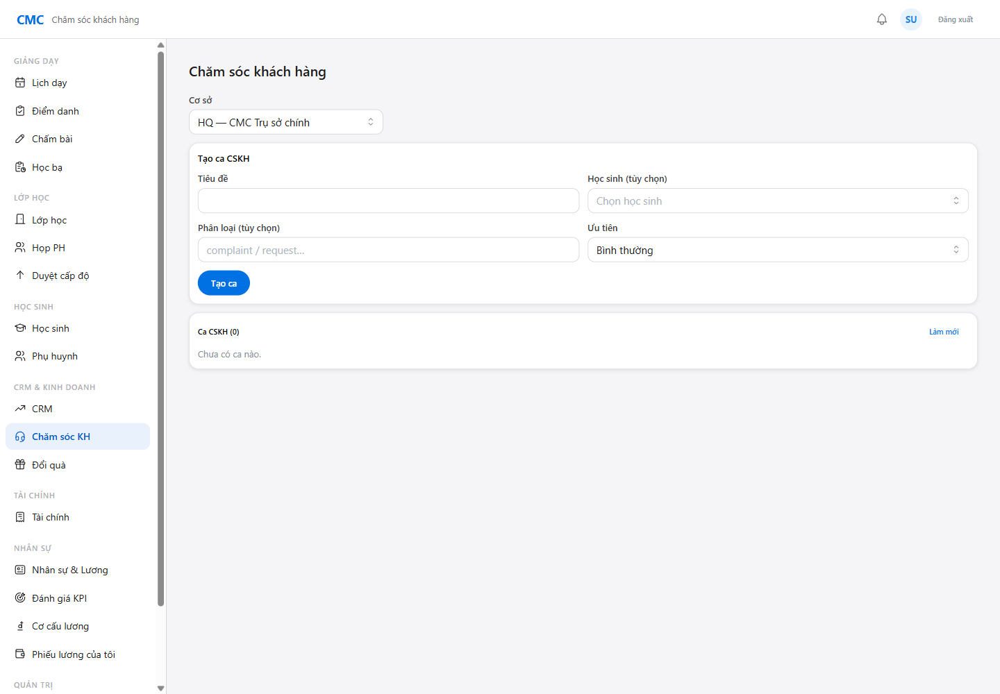
Luồng thao tác trọn vẹn: xử lý một khách tuyển sinh từ cơ hội đến chăm sóc sau bán
- Mở CRM, kiểm tra các bước O1-O5 để biết khách đang ở bước O1-O5.
- Tạo hoặc mở cơ hội, nhập thông tin liên hệ tối thiểu, chọn chương trình nếu đã rõ.
- Sale cập nhật bước các bước O1-O5 sau từng lần tư vấn. GĐ Kinh Doanh dùng màn này để giám sát tiến độ và phát hiện khách bị dừng quá lâu.
- Khi khách cần test đầu vào, tạo lịch test trong khu vực CRM. Giáo viên hoặc trưởng bộ môn là người chấm test.
- Khi khách nhập học và phát sinh ca chăm sóc, mở Chăm sóc khách hàng để theo dõi, chuyển trạng thái hoặc phân ca cho CSKH.
- Với yêu cầu đổi quà, mở Đổi quà, kiểm tra yêu cầu và duyệt nếu hợp lệ.
- Vào Tài chính để xem doanh thu/phiếu thu liên quan. Không tạo, duyệt, đối soát hoặc hủy phiếu thu ở vai trò này.
Minh họa luồng thao tác dùng hình an toàn dữ liệu cho CRM/tài chính vì các màn thật có thể chứa tên, số điện thoại, mã phiếu hoặc thông tin học sinh.
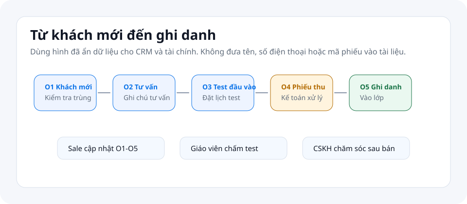
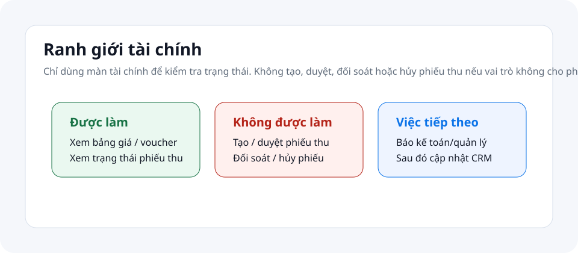
Luồng thao tác trọn vẹn: mở ngày làm việc của nhóm sale
- Mở Tổng quan để xem tình hình chung của cơ sở.
- Mở CRM, lọc các cơ hội đang ở O1/O2 quá lâu để nhắc sale cập nhật.
- Kiểm tra cơ hội O4/O5 để biết khách nào cần test, ghi danh hoặc xử lý phiếu thu.
- Mở Chăm sóc khách hàng, xem ca mới, ca quá hạn và người đang phụ trách.
- Mở Tài chính để đối chiếu trạng thái phiếu thu với CRM, nhưng không thực hiện tạo/duyệt.
- Cuối ngày, mở Đánh giá KPI hoặc báo cáo liên quan để theo dõi dữ liệu sales của kỳ.
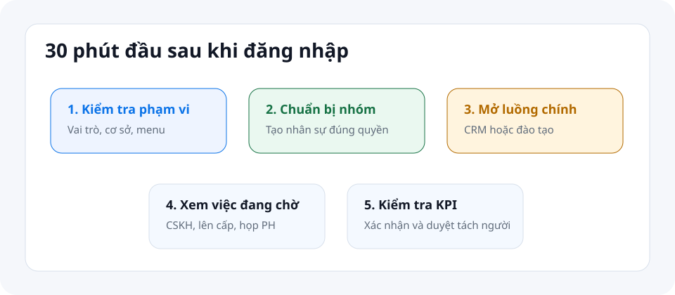
5. Hướng dẫn cho Giám Đốc Đào Tạo
GĐ Đào Tạo nhìn thấy các mục: Tổng quan, Cơ sở & Người dùng, Lịch dạy, Điểm danh, Chấm bài, Học bạ, Lớp học, Họp phụ huynh, Duyệt cấp độ, Khóa học, KPI, Phiếu lương của tôi.
Khóa học
Tạo khóa học mới và lưu trữ khóa khi cần.
Lớp học
Tạo lớp, đổi trạng thái, hủy lớp, mở lại lớp.
Lịch dạy
Thêm khung lịch và sinh buổi học theo khoảng ngày.
Điểm danh
Đánh dấu có mặt/vắng cho từng buổi.
Chấm bài & Học bạ
Chấm/phát hành điểm, quản lý kỳ học, mẫu đánh giá, định tính, điểm tổng kết.
Level-up
Đề xuất, xem danh sách chờ, duyệt hoặc từ chối nâng cấp độ.
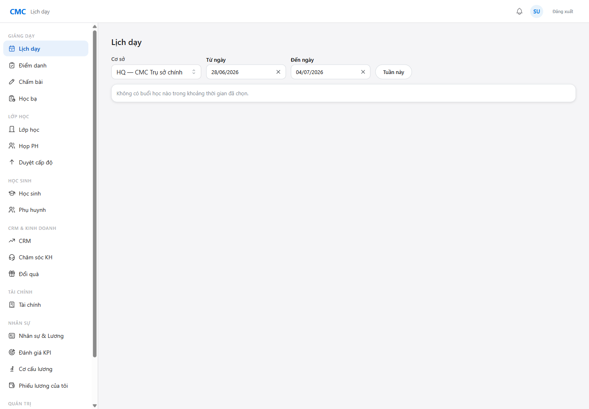
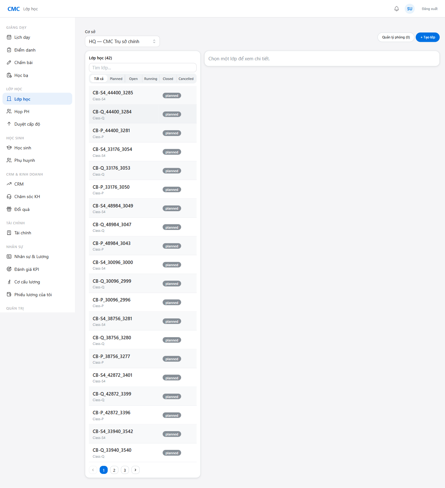
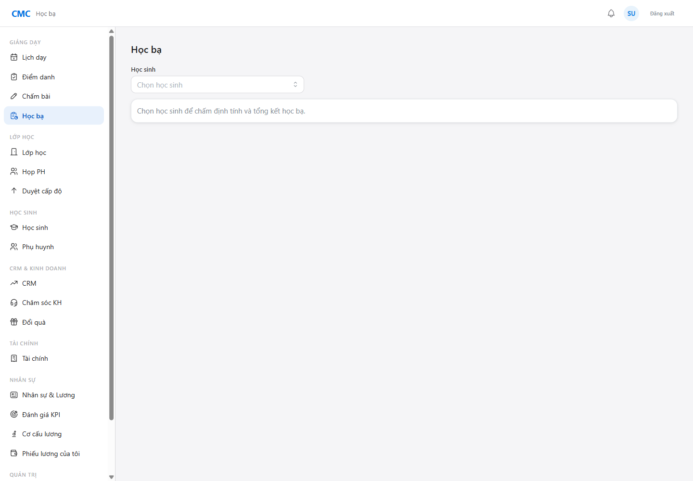
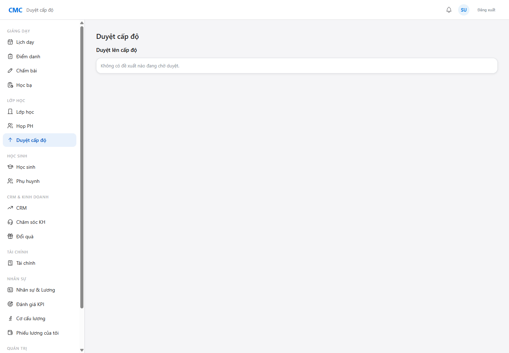
Luồng thao tác trọn vẹn: mở lớp, chạy buổi học và xử lý kết quả học tập
- Mở Khóa học, kiểm tra khóa/chương trình đã tồn tại. Nếu thiếu, tạo khóa mới với mã, tên và chương trình.
- Mở Lớp học, tạo lớp, chọn khóa, cơ sở và giáo viên phụ trách.
- Trong lớp, chuyển trạng thái theo vòng đời: planned -> running khi bắt đầu, closed khi kết thúc; dùng cancel/reopen khi cần xử lý ngoại lệ.
- Mở Lịch dạy, thêm khung lịch, sau đó sinh buổi học cho khoảng ngày cần chạy.
- Trong từng buổi, dùng Điểm danh để ghi nhận có mặt/vắng.
- Giáo viên hoặc bộ phận đào tạo dùng Chấm bài để chấm và phát hành điểm.
- Mở Học bạ, nhập đánh giá định tính và tính điểm tổng kết.
- Nếu học sinh đủ điều kiện, tạo hoặc xem đề xuất ở Duyệt cấp độ, sau đó quyết định duyệt/từ chối.
- Dùng Họp phụ huynh để đặt lịch và cập nhật trạng thái buổi họp theo lớp.
Luồng đào tạo dùng một sơ đồ tổng quan và ảnh màn hình từ môi trường thử nghiệm. Ảnh màn hình hiện tại là ảnh định vị màn hình; dữ liệu lớp/học sinh thật không đưa vào tài liệu.
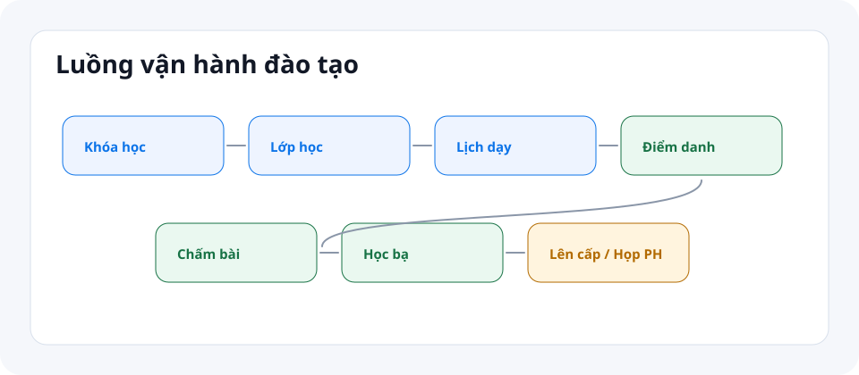
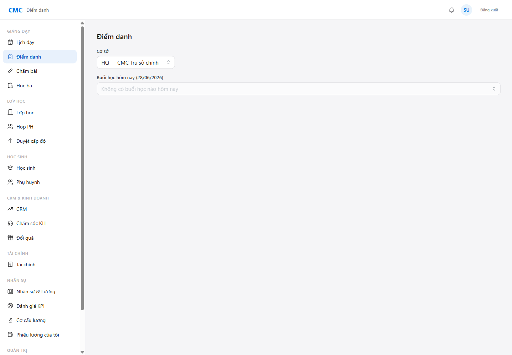
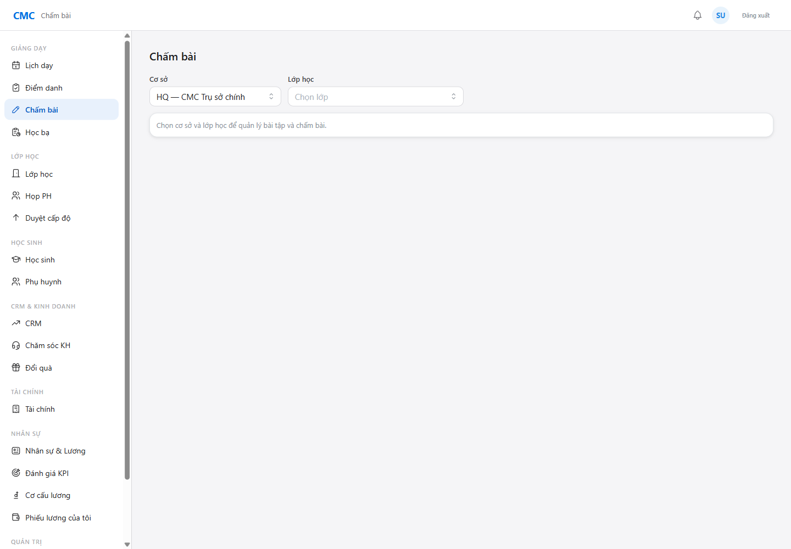
Luồng thao tác trọn vẹn: mở ngày làm việc của phòng đào tạo
- Mở Lịch dạy để xem buổi hôm nay, giáo viên phụ trách và phòng học.
- Mở Lớp học, kiểm tra lớp planned cần chạy, running cần theo dõi, closed/cancelled cần xử lý.
- Mở Điểm danh sau giờ học để kiểm tra lớp nào chưa được lưu điểm danh.
- Mở Chấm bài để phát hiện bài tập đã nộp nhưng chưa chấm hoặc chưa phát hành điểm.
- Mở Học bạ để xem kỳ học, nhận xét định tính và điểm tổng kết còn thiếu.
- Mở Duyệt cấp độ để xử lý đề xuất đang chờ, tránh học sinh bị kẹt level.
- Mở Họp phụ huynh để kiểm tra lịch họp và trạng thái đã hoàn tất/chưa hoàn tất.
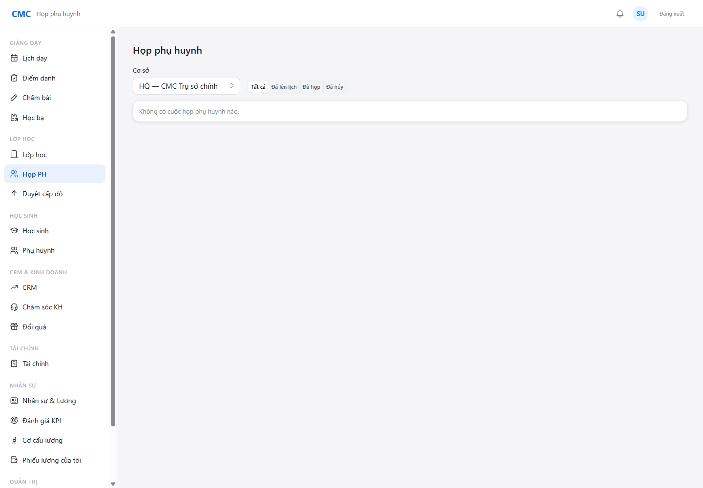
6. Tạo nhân sự mới
Việc đưa nhân sự mới vào hệ thống gồm hai bước do hai người khác nhau thực hiện.
| Bước | Người làm | Nội dung |
|---|---|---|
| 1 | IT / super_admin | Tạo email Microsoft @cmcvn.edu.vn cho nhân viên. |
| 2 | Giám đốc | Mở Cơ sở & Người dùng, bấm Tạo người dùng, nhập email, tên, vai trò, vai trò chính, cơ sở. |
GĐ KD được tạo
Sale, CSKH, CTV Marketing.
GĐ ĐT được tạo
Giáo viên, Trưởng Bộ Môn.
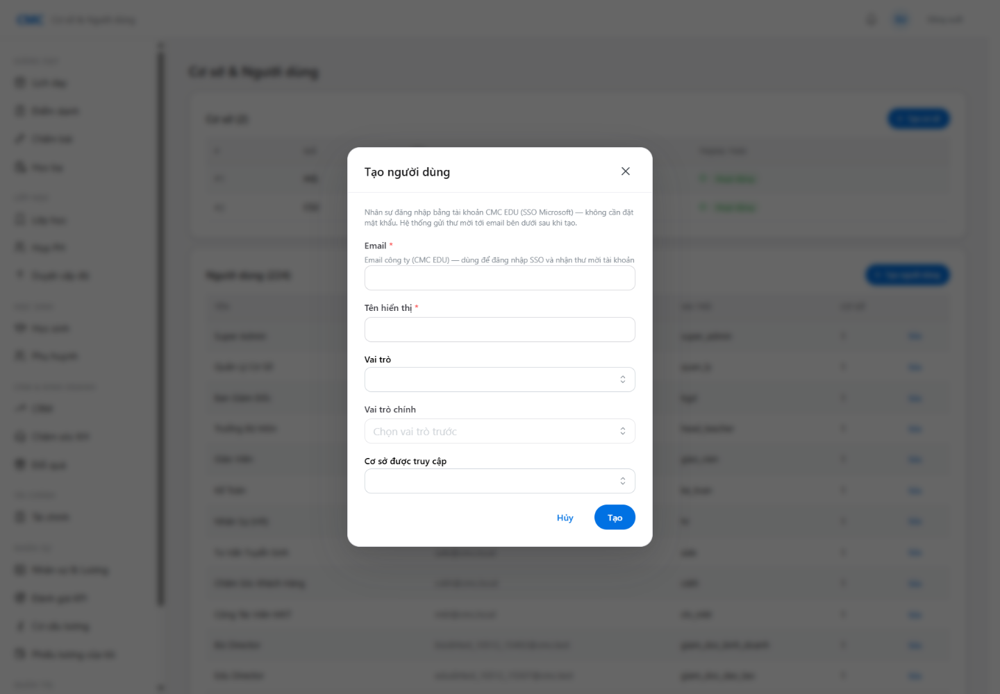
Luồng thao tác trọn vẹn: thêm một nhân sự mới vào nhóm
- Xác nhận IT đã tạo email Microsoft
@cmcvn.edu.vncho nhân sự. - Mở Cơ sở & Người dùng, bấm Tạo người dùng.
- Nhập email công ty và tên hiển thị.
- Chọn vai trò trong danh sách đã lọc: GĐ KD chỉ chọn sale/cskh/ctv_mkt; GĐ ĐT chỉ chọn giao_vien/head_teacher.
- Chọn vai trò chính nếu nhân sự có nhiều vai trò.
- Chọn cơ sở được truy cập, rồi bấm Tạo.
- Nhân sự đăng nhập lần đầu bằng tài khoản Microsoft của công ty, không nhận mật khẩu CMCnew riêng.
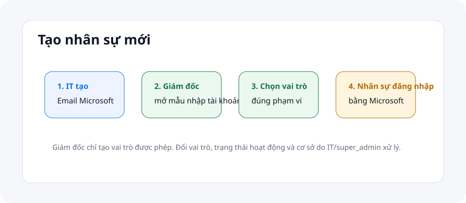
7. Quy trình chấm & duyệt KPI
KPI đi qua bốn trạng thái: Nháp → Đã nộp → Đã xác nhận → Đã duyệt.
| Bước | Trạng thái | Người thực hiện |
|---|---|---|
| Chuẩn bị dữ liệu | Nháp | Nhân sự / Kế toán |
| Nộp phiếu | Đã nộp | Nhân sự / Quản lý |
| Xác nhận | Đã xác nhận | Quản Lý hoặc Giám Đốc |
| Duyệt cuối | Đã duyệt | Giám Đốc |
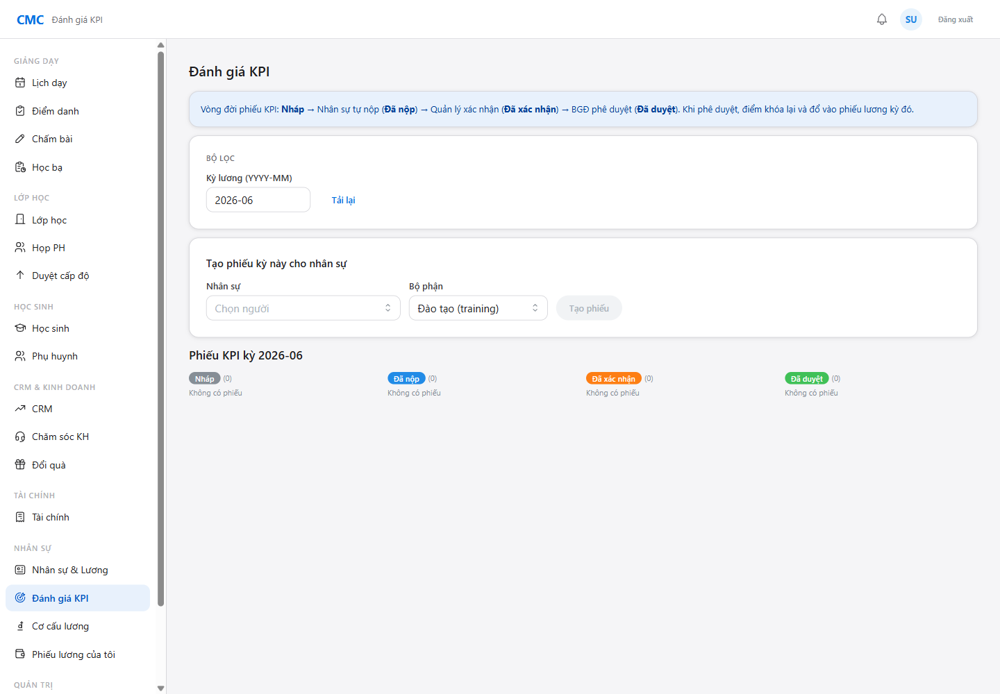
Luồng thao tác trọn vẹn: xác nhận và duyệt một phiếu KPI
- Nhân sự/Kế toán chuẩn bị dữ liệu và tạo phiếu ở trạng thái Nháp.
- Nhân sự/Quản lý nộp phiếu, chuyển sang Đã nộp.
- Giám đốc hoặc Quản Lý mở Đánh giá KPI, kiểm tra kỳ lương, bộ phận, điểm và ghi chú.
- Người xác nhận bấm Xác nhận, phiếu chuyển sang Đã xác nhận.
- Một người khác mở lại phiếu đã xác nhận và bấm Duyệt.
- Khi phiếu ở trạng thái Đã duyệt, điểm được khóa và đổ vào phiếu lương kỳ đó.
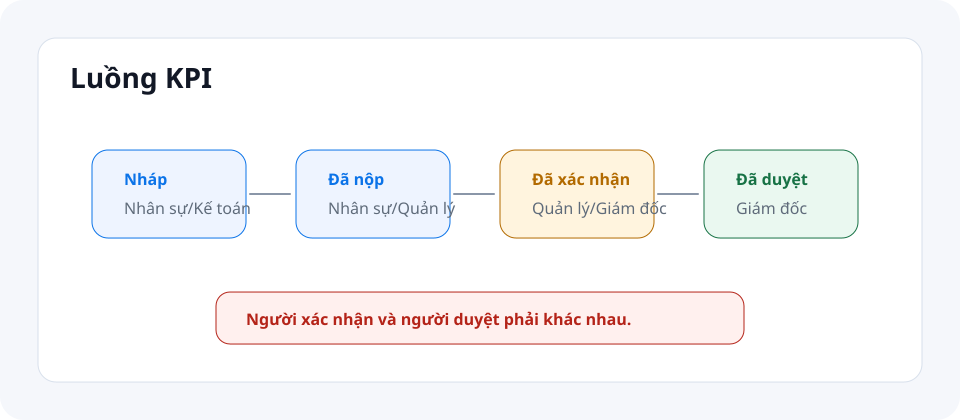
8. Lưu ý nhanh
- Menu và nút hành động đều theo quyền; thiếu nút không phải lỗi.
- GĐ Kinh Doanh không có quyền học vụ/giảng dạy và không ghi tài chính.
- GĐ Đào Tạo không có CRM, CSKH, tài chính, đổi quà.
- Đặt lại mật khẩu LMS cho học sinh hiện do Quản Lý cơ sở thực hiện qua mục Học sinh.
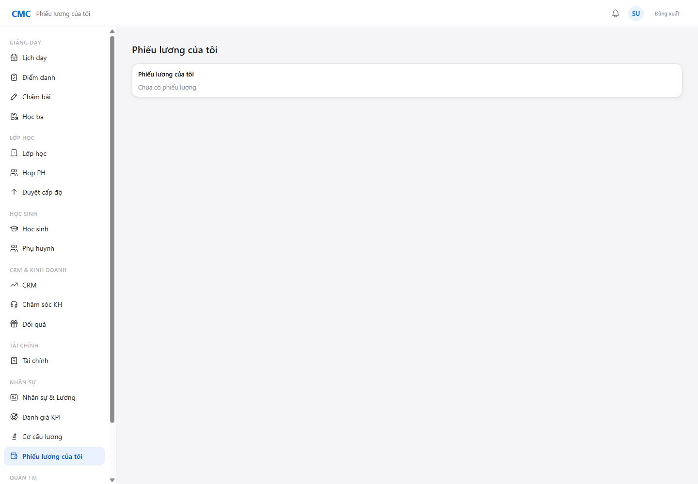